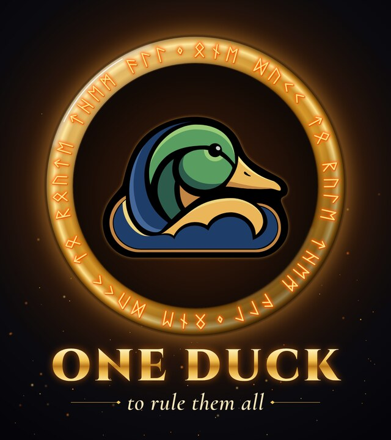

OneDuck
A local router in front of role-based ducklings. Task prompt for a coding agent.
Fetch https://critfusion.github.io/oneduck/prompt.md and follow it, starting with Phase 0.Or copy the prompt below and paste it in.
# OneDuck: a local router in front of role-based ducklings
You are working in my codebase and environment. This document is your task. Read all of it before you start. Work in the phases below, and stop where it says to stop.
## Goal
Build OneDuck, an opt-in routing layer that sits in front of every model provider we use:
- local models (Qwen via Ollama or vLLM)
- Amazon Bedrock
- Anthropic (Claude)
- OpenAI / Codex
The user never picks a model and normally never sees one. They work with **roles**: `basic`, `coding`, `research` and `planning`.
A small **local** model reads each new request and classifies it. Deterministic code then does one of three things:
- answers it locally;
- hands it to a **duckling**, a role-specific sub-agent backed by a fixed model for that role;
- splits it across several ducklings.
A duckling's session stays open for the length of the task, so prompt caching keeps working.
The aim is to spend fewer expensive-model tokens and keep the cache warm, without ever getting in the user's way.
### Names
These are my names for things. Map each one to the real component and tell me where a name doesn't match.
- **Mallard**: the harness the user talks to.
- **DuckCloud**: the gateway/adapter layer between the harness and the providers.
- **Ducklings**: sub-agents.
- Model names I use loosely: Qwen 3.6/3.8 locally; Claude haiku/sonnet/opus; Codex/OpenAI tiers; Bedrock endpoints.
Use the real model identifiers you find in config. Don't trust my names.
## Non-negotiables
1. **The small model classifies; code decides.** The router never names a model ID. Role mapping, budgets, overrides and fallbacks are plain, testable code and config, so the router model can be swapped without touching policy.
2. **Users see roles, not models.** Provider details live in config and the gateway. A debug view may show the model.
3. **Sessions are sticky.** Once a duckling is serving a task, later turns go straight to it. They are not re-classified or re-routed. Re-routing mid-session destroys the prompt cache and costs more.
4. **Fail open.** If the router is down, slow, invalid or unsure, the request still goes somewhere sensible. OneDuck may save tokens. It must never block anyone.
5. **Off means off.** With OneDuck disabled, or not set up on a machine, everything behaves exactly as it does today.
6. **Provider-agnostic core.** Inside the harness, requests use one vendor-neutral format. Only the gateway translates it into Anthropic Messages, Bedrock (InvokeModel/Converse), OpenAI chat/responses, or raw vLLM/Ollama calls.
7. **Routing stays local.** The classification call never leaves the machine or network it runs on.
---
## Phase 0: assess the current setup. No code changes.
Read the code and config. Write `docs/oneduck/assessment.md` covering the points below.
1. **Request path.** Trace a request end to end: user → harness → DuckCloud → provider. Where is the model chosen today? Find the single choke point where a router can sit. If there isn't one, say so and propose the smallest refactor that creates one.
2. **Providers.** For each provider, record:
- how it is called;
- its auth type (API key, IAM role, subscription login);
- its rate-limit handling;
- whether remaining quota or tokens are exposed (headers, an API, or nothing);
- whether streaming (SSE) and beta/version headers are passed through correctly.
3. **Sessions and caching.** Record:
- how conversation context is carried today;
- whether there is connection pooling;
- where prompt caching is used (Anthropic `cache_control`, Bedrock prompt caching, OpenAI automatic caching, vLLM prefix caching);
- whether cache-read token counts are visible in responses.
Can a conversation move between providers without losing history? What would that cost?
4. **Sub-agents.** How are ducklings created, run and reported back today? Can each one have its own model and its own long-lived session?
5. **Models available.** List every model actually reachable: local Qwen variants, Bedrock, Anthropic, OpenAI. Give each one's practical strengths and limits for each role, plus rough cost, latency and context size.
6. **Local runtime.** Check:
- Ollama and/or vLLM version (JSON-schema constrained output needs a recent release);
- which models are pulled;
- `keep_alive` settings;
- which hardware the router would run on.
7. **Install, config and CLI.** How is the harness installed and upgraded? Is there a CLI subcommand pattern (for `oneduck on|off|status|explain`)? What is the config convention?
8. **Leaks.** List places where provider-specific logic has leaked into the harness.
Finish with a list of gaps and open questions.
## Phase 1: design. No code changes yet.
Write `docs/oneduck/design.md` with:
1. **Config schema** for roles → models, with a filled-in example from what you found in Phase 0. See §3 below.
2. **Classifier system prompt**, ready to use with the local Qwen, including few-shot examples of borderline cases. Start from the draft in the Appendix and improve it.
3. **Flow**, step by step or as a Mermaid sequence diagram:
- new request → local classification → one of: local answer, duckling create/resume, or split;
- session persistence, plus how a session ends;
- each failure path.
4. **Change list**: concrete files, functions and config to add or modify, in commit order.
5. **Risks and mitigations**, covering at least:
- misclassification, especially under-routing;
- context pollution in the router;
- cache invalidation;
- added latency;
- quota you can't see;
- context loss when a forced provider switch happens.
**Stop after Phase 0 and Phase 1 and wait for my review.** Small, clearly isolated fixes are fine before then, such as a bug you hit along the way. If I'm not available, take the most conservative reading, write it at the top of `design.md`, and continue.
## Phase 2: implement and test
Build what the reviewed design says, using the spec below. Reuse existing harness, gateway and sub-agent mechanisms. Do not build a parallel provider or sub-agent system.
---
## Design spec
### 1. The router (local model)
- **Model and runtime.** Run the local Qwen (3.8, or the closest available) through Ollama or vLLM:
- JSON-schema constrained output (`format` / guided decoding);
- temperature 0;
- thinking/reasoning mode **off**.
- **Clean context.** Every routing call starts fresh: system prompt plus this request only, with no accumulated history. If the same local model also answers `basic` questions, use a separate process or a fresh context for routing.
- **Input.**
- The request, truncated head + tail to a configurable size (default ~2k tokens).
- A short header giving: whether a duckling session is active and its role; the number of attached files; the total input size.
- **Output schema.**
```json
{
"role": "basic | coding | research | planning",
"complexity": "T0 | T1 | T2 | T3",
"answer_locally": true,
"split": [{ "role": "...", "complexity": "...", "goal": "one line" }],
"confidence": 0.0,
"reason": "≤15 words"
}
```
- `answer_locally` may be true only when `role` is `basic`.
- `split` is optional.
- The role list comes from config, so roles can be added without changing code.
- **Warm start.** Keep the router warm (`keep_alive`, plus a warm-up when the harness starts) so a cold load doesn't trip the timeout.
- **Confidence.** Treat `confidence` as a weak, self-reported signal. Tune its threshold against the golden set (see Tests).
### 2. Policy (deterministic code)
Apply these rules in this fixed order, and log which rule decided:
1. **Explicit override.**
- A prefix at the start of a message forces a target and is stripped before dispatch. Role prefixes: `@planning`, `@coding`, `@research`, `@basic`. Model prefixes for debugging: `@opus`, `@local`, etc.
- `@direct` bypasses OneDuck entirely.
- `@new` ends the current duckling session and re-classifies.
2. **OneDuck off** → today's behaviour.
3. **Active duckling session** → send to that duckling without classifying. The router is consulted only for:
- the first request of a task;
- `@new`, or an explicit mode switch;
- the first request after the session ends (see §4).
4. **Router failure** → `default_target`, with a one-line notice. Failure means any of:
- timeout (default 1500 ms);
- runtime down or model not loaded;
- output that fails the schema.
5. **Low confidence** (below `confidence_threshold`, default 0.75) → **escalate, never guess down.** Use the classified role's `heavy` model, or `default_target` if that is stronger.
6. **Classification.**
- `answer_locally` → answer with the local basic model.
- Otherwise, pick the role's model at session start: `primary`, or `heavy` when complexity is T3.
7. **Health.** Skip models with recent errors or rate-limit responses (configurable cooldown), and move to the next fallback.
8. **Budget.** See §5.
9. **Floor.** Never go below the role's `min_model`, except when every provider is exhausted.
### 3. Roles → models (config, not code)
Put this in one commented YAML file, using the harness's config convention (e.g. `~/.mallard/oneduck.yaml`). Example shape:
```yaml
enabled: false # opt-in
default_target: <what is used today without OneDuck> # fail-open destination
confidence_threshold: 0.75
router:
runtime: ollama # or vllm
model: <measured choice>
timeout_ms: 1500
max_input_tokens: 2000
capability_order: [basic, coding, research, planning] # used when escalating
roles:
basic:
primary: local/qwen-3.8
fallbacks: [anthropic/haiku]
why: "fast, free, fine for short factual Q&A"
coding:
primary: <codex or claude coding model>
heavy: <stronger coding model>
fallbacks: [vllm/qwen-coder, bedrock/...]
min_model: <floor>
why: "..."
research:
primary: <long-context / tool-using model>
fallbacks: [...]
why: "..."
planning:
primary: anthropic/opus
fallbacks: [openai/<top tier>, bedrock/claude-...]
why: "..."
session:
idle_timeout_min: 30
budget:
headroom_threshold: 0.20
caps: { daily: ..., weekly: ... } # for providers that don't expose quota
overrides:
workspaces:
<workspace-id>: { roles: { coding: { primary: ... } } } # per-customer/per-workspace, no code changes
```
- Each role has exactly **one primary** model, so its cache stays effective. Fallbacks are only for health and budget.
- Record **why** each model was chosen: strengths, cost, latency, cache friendliness.
- Per-workspace and per-customer overrides merge over the defaults.
### 4. Duckling sessions
- **One duckling per role per logical task.** Keep its connection and session alive for the whole task.
- **Session ends** on any of:
- `@new`;
- an explicit "switch to …";
- the idle timeout;
- the task being marked done;
- the harness session closing.
Optionally, behind a flag that is off by default, a cheap "is this a new task?" check may run on later turns. It may only *suggest* a new session; it never moves one silently.
- **Follow-ups stay put.** A short follow-up such as "yes, do it" stays on the active duckling. Anything that continues a specialized session never drops to the local model.
- **Forced moves.** If health or budget forces a model change mid-session:
- tell the user in one line;
- hand over a compact summary of the session;
- log the event as a cache break.
- **Splits.**
- Only split when `split` is present **and** the parent complexity is ≥ T2.
- Create child ducklings through the existing sub-agent mechanism, and route each child by the same policy (overrides excepted).
- The parent integrates the results at the strongest role any child used.
- Depth is capped at 1: ducklings never split again.
- Max parallel ducklings defaults to 3 (configurable); extras queue.
### 5. Budget
- **Tracking.** Use real quota headers or APIs where they exist. Where they don't (expect this for subscription logins), keep a local usage ledger with configurable caps. The ledger must be safe under parallel ducklings (file lock or atomic append).
- **New sessions below the headroom threshold**, in this order:
1. use the same role's fallback on another provider, if it has headroom;
2. otherwise step down one model within the role, never below `min_model`.
- **Active sessions** are not moved for low headroom, only for exhaustion or rate limits (see §4).
- **Exhausted everywhere:** fall back to vLLM, then local, even below the floor, because the alternative is blocking the user. Say so in one line.
### 6. Gateway (DuckCloud)
- The gateway is the only place that translates the vendor-neutral request into a provider API.
- Follow each provider's gateway conventions. For Claude, follow the Anthropic LLM-gateway pattern: forward `anthropic-version`, `anthropic-beta` and SSE streaming intact. Do the equivalent for OpenAI and Bedrock.
- Preserve cache markers (`cache_control`, etc.) end to end, and return cache-read and cache-write token counts to the harness.
### 7. Visibility, commands and privacy
- **Commands:** `oneduck on|off|status|explain|wrong <role>`.
- **Before each new routing decision, print one line**, e.g.
`🦆 coding (T2) → new session · reason: multi-file refactor`.
Inside a session, show only a small "on coding duckling" indicator. Debug mode adds the actual model and any budget reason.
- **`explain`** shows the last decision in full: classification, candidates considered, and the deciding rule.
- **Privacy.** The decision log stores a hash of the request, not its text, unless verbose logging is on. `oneduck wrong <role>` is the one exception: it saves that request's text to a local eval set, and says so when it runs.
### 8. Logging and tuning
Append one JSONL line per routing decision and per duckling turn, with:
- timestamp, session id and request hash;
- role, complexity, confidence, reason, and the deciding rule;
- the model actually used, and the fallback or budget reason if any;
- input, output, cache-read and cache-write tokens;
- router latency and total latency;
- estimated cost;
- outcome: `ok`, `error`, `overridden`, `flagged_wrong` or `cache_break`.
The log must be enough to show which roles are over- or under-used, the cache-hit rate per role, and cost against the "everything to `default_target`" baseline.
### 9. Local setup detection (only if the router runs on the user's machine)
- On install or upgrade, detect the hardware:
- Apple Silicon or a suitable GPU;
- enough memory (≥32 GB unified memory or equivalent);
- Ollama or vLLM present and recent enough.
- **Ask before** each of:
- enabling OneDuck;
- installing a runtime;
- pulling any model.
Back up any existing config before writing a new one.
- **Choose the router model by measurement.**
- Benchmark a short candidate list: the existing local Qwen first, then the smallest Qwen instruct models of about 1.5–4B at 4-bit.
- Pick the smallest that meets **warm p95 ≤ 300 ms** and gives schema-valid output on ≥99% of the golden set.
- Ask before downloading more than two candidates.
- Machines that don't qualify are left completely unchanged, with no prompts.
---
## Tests (required before calling it done)
- **Policy unit tests**, table-driven, with literal expected targets, covering:
- role × complexity × confidence × budget state × provider health;
- each override prefix, and that it is stripped;
- the floor;
- fallback order;
- the exhausted-everywhere fallback;
- per-workspace overrides.
- **Session tests:**
- follow-ups inside a session are never classified (assert the router was not called);
- every way a session can end (`@new`, switch, idle timeout, done, close);
- a forced mid-session move emits a notice and logs `cache_break`.
- **Cache test**, against a real or recorded provider: consecutive turns in one duckling session report cache-read tokens > 0.
- **Router tests** with a mocked runtime:
- valid output;
- invalid JSON;
- schema-invalid JSON;
- timeout;
- runtime down;
- low confidence.
Each failure goes to `default_target` with a notice. Low confidence escalates.
- **Split tests:**
- a split at ≥ T2 creates the right children with the right roles;
- a split below T2 is ignored;
- depth 1 is enforced;
- the parallel cap is enforced.
- **Gateway tests:** version and beta headers, SSE and cache markers pass through for each provider.
- **Golden set:**
- Draft ~40 realistic requests in `tests/oneduck/golden.yaml`, spread across roles and complexities. Include borderline cases, short follow-ups, splits and overrides.
- **Show me the labels for review before measuring.**
- Then report:
- role accuracy and complexity accuracy (exact and within one tier);
- a confusion matrix;
- the under-routing rate, reported separately (too low costs quality, too high only costs tokens);
- router p50/p95 latency, warm and cold;
- the estimated cost saving against the baseline.
- **Setup detection** with mocked hardware: qualifies; wrong CPU/GPU; too little memory; no runtime; runtime too old. No real installs or downloads.
- **Break-tests.** For each guard below:
- revert the guard;
- confirm a named test fails;
- restore the guard;
- list the guard → test pairs in the report.
Guards:
- each fail-open path;
- low-confidence escalation;
- session stickiness (no reclassification);
- the floor;
- the depth and parallel caps;
- override precedence;
- request hashing;
- "off means off".
## Deliverables
- **Phase 0:** `docs/oneduck/assessment.md`.
- **Phase 1:** `docs/oneduck/design.md` (config schema, classifier prompt, flow, change list, risks).
- **Phase 2:**
- a branch named `oneduck` with focused commits (don't merge or push);
- the commented config file;
- a README section: "OneDuck: how routing works, overrides, how to turn it off".
- **Final report:**
- test results and the break-test table;
- golden-set metrics;
- measured latency and the chosen router model;
- cache-hit rate;
- everything you couldn't verify, such as quota APIs that aren't exposed or context loss on forced switches.
---
## Appendix: starting classifier prompt (improve it in Phase 1)
```
You route requests for a coding assistant. Classify the REQUEST. Do not answer it.
Roles:
- basic: short factual questions, definitions, quick lookups, small talk. No code changes.
- coding: write, edit, refactor or debug code; explain specific code; run or fix tests.
- research: gather and compare information across many files, docs or sources; summarize long material.
- planning: design, architecture, multi-step plans, trade-off decisions, reviews of approach.
Complexity: T0 trivial · T1 simple (one step, one file) · T2 standard (several steps or files) · T3 hard (ambiguous, cross-cutting, high stakes).
answer_locally: true only for basic + T0/T1 that need no repository context.
split: only when the request clearly contains independent sub-tasks for different roles.
If unsure between two roles, choose the more capable one and lower confidence.
Examples:
"what does HTTP 429 mean?" → basic, T0, answer_locally true, 0.95
"rename getUser to fetchUser across the repo and fix the tests" → coding, T2, 0.9
"why is this test flaky? <stack trace>" → coding, T2, 0.8
"compare our retry logic in the three services and suggest one approach" → planning, T3, split [research T2 "survey retry logic in the three services"], 0.7
"summarize the last 20 incident reports" → research, T2, 0.85
"ok, go ahead" (no active session) → basic, T0, confidence 0.3
Reply with JSON only, matching the schema.
```